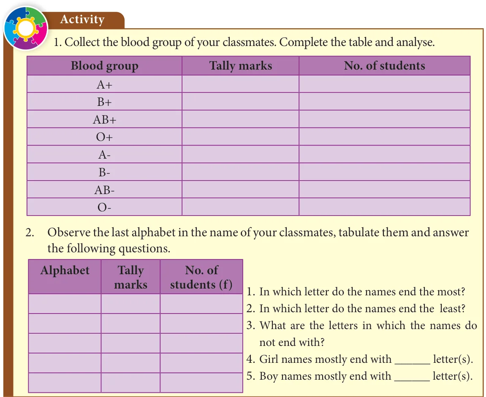
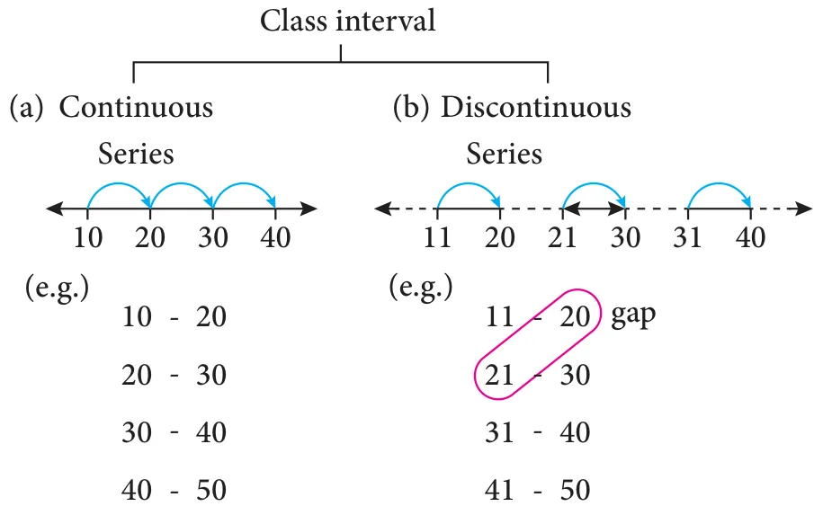
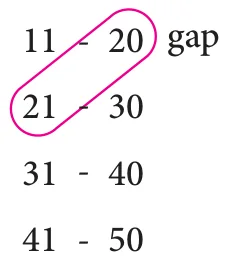

Frequency distribution:
A frequency distribution is the arrangement of the given data in the form of the table showing frequency with which each variable occurs.
There are two types of distribution table namely
- frequency distribution table for ungrouped data and
- frequency distribution table for grouped data.
Note
Range: The difference between the largest and the smallest values of the data given. If 5, 15, 10, 7, 20, 18 are the data then,
Range \(= 20 - 5 = 15\)
Try these
- Arrange the given data in ascending and descending order: 9,34,4,13,42,10,25,7,31,4,40
- Find the range of the given data : 53, 42, 61, 9, 39, 63, 14, 20, 06, 26, 31, 4, 57
6.2.1 Construction of frequency distribution table for ungrouped data
Ungrouped data or Discrete Data:
An ungrouped data can assume only whole numbers and exact measurement. These are the data that cannot have a range of values. A usual way to represent this is by using Bar graphs.
Examples:
- The number of teachers in a school.
- The number of players in a game.
Example 6.1
Form an ungrouped frequency distribution table for the weight of 25 students in STD IV given below and answer the following questions.
25, 24, 20, 25, 16, 15, 18, 20, 25, 16, 20, 16, 15, 18, 25, 16, 24, 18, 25, 15, 27, 20, 20, 27, 25.
- Find the range of the weights.
- How many of the students has the highest weight in the class?
- What is the weight to which more number of students belong to?
- How many of them belong to the least weight?
Solution:
To form a distribution table, arrange the given data in ascending order under Weight column then, put a vertical mark against each variable under Tally marks column and count the number of tally marks against the variable and enter it in Frequency column as given below. Hence, the distribution table is

- The range of the given data is the difference between the largest and the smallest value. Here, the range \(= 27 - 15 = 12\).
- From this table, two of the students have the highest weight of 27 kg.
- 6 students belong to 25 kg weight.
- 3 students belong to the least weight of 15 kg.
So, when we tabulate the given data, it is easy to get the information at a glance, Isn't it?

6.2.2 Construction of frequency distribution table for grouped data
Grouped data or Continuous Data:
A grouped data is any value within a certain interval. The data can take values between certain range with the highest and the lowest value. Continuous data can be tabulated in what is called as frequency distribution. They can be graphically represented using Histograms.
Example:
- The age of persons in a village.
- The height and the weight of the students of your class.
Now, we will consider a situation, if we collect data of marks for 50 students, it becomes very difficult to put tally for each and every marks of all the 50 students. Because if we arrange the marks in a table, it will be very large in length and not understandable at once. In this case, we use class intervals. In this table, consider the groups of data in the form of class intervals to tally the frequency for the given data.
Class Interval:
The range of the variable is grouped into number of classes, and each group is known as class interval (C.I). The difference between the upper limit (U) and the lower limit (L) of the class is known as class size.
i.e. C.I = Upper limit \(-\) Lower limit
For example,
Marks for the C.I 10 to 20 can be written as 10-20, whose class size is \(20 - 10 = 10\)

- While distributing the frequency, we follow the counting as given below. Suppose the classes are 10-20, 20-30, 30-40, 40-50 ..... This represent a continuous series. Here, 20 is included in the class 20-30 and 30 is included in 30-40, likewise for the other classes also.
- In case the given series has a gap between the limits of any two adjacent classes, this gap may be filled up by extending the two limits of each class by taking half of the value of the gap. Half of the gap is called the adjustment factor.
Conversion of a discontinuous series into continuous series:
In case the given series is a discontinuous, we can make it as continuous as follows,
Illustration 1:

difference in the gap \(= 21 - 20\)
\(= 1\)
Lower boundary = lower limit \(-\) half of the gap
\(= 11 - \frac{1}{2}(1)\)
\(= 11 - 0.5 = 10.5\)
Upper boundary = upper limit \(+\) half of the gap
\(= 20 + \frac{1}{2}(1)\)
\(= 20 + 0.5\)
\(= 20.5\) and so on for other classes too.
Therefore, the class interval can be changed into a continuous one as given in the following table,

Note
Inclusive series:
In the class-intervals, if the upper limit and lower limit are included in that class interval then it is called inclusive series. For example, 11-20, 21-30 , 31-40, 41-50 etc is an inclusive series.
Here, the data 11 and 20 are included in the class (11-20) and so on. Clearly, it is a discontinuous series.
Exclusive series:
In the class intervals, if the upper limit of one class interval is the lower limit of the next class interval then it is called exclusive series. For example, 10-15, 15-20, 20-25, 25-30 etc., is an exclusive series.
Here, 15 is included in the class 15-20 and 20 is included in 20-30. Clearly, it is a continuous series.
6.2.2 (i) Construction of grouped frequency distribution table – Continuous series
Example 6.2
The EB bill(in ₹) of each of the 26 houses in a village are given below. Construct the frequency table.
| 215 | 200 | 120 | 350 | 800 | 600 | 350 | 400 | 180 | 210 | 170 | 305 | 204 |
| 220 | 425 | 540 | 315 | 640 | 700 | 790 | 340 | 586 | 660 | 785 | 290 | 300 |
Solution:
Maximum bill amount = ₹ 800
Minimum bill amount = ₹ 120
Range = largest value \(-\) smallest value
Range \(= 800 - 120 =\) ₹ 680
Suppose if we want to take class size as 100, then
The number of possible class intervals \(= \dfrac{\text{Range}}{\text{Class size}} = \dfrac{680}{100} = 6.8 \simeq 7\)

6.2.2 (ii) Construction of grouped frequency distribution table - Discontinuous series.
Example 6.3
Convert the given discontinuous series into a continuous series.
| Class | 0-5 | 6-11 | 12-17 | 18-23 | 24-29 |
| Frequency(f) | 7 | 10 | 9 | 5 | 12 |
Solution:
As told above, first we should fill the gap by extending the two limits of each class by half of the value of the gap. Here the gap is 1, so subtracting and adding half of the gap i.e 0.5 to the lower and the upper limit of each class makes it as a continuous series.
| Class | \(-0.5\)-5.5 | 5.5-11.5 | 11.5-17.5 | 17.5-23.5 | 23.5-29.5 |
| Frequency(f) | 7 | 10 | 9 | 5 | 12 |
Try these
- Prepare a frequency table for the data : 3, 4, 2, 4, 5, 6, 1, 3, 2, 1, 5, 3, 6, 2, 1, 3, 2, 4
- Prepare a grouped frequency table for the data : 10, 9, 3, 29, 17, 34, 23, 20, 39, 42, 5, 12, 19, 47, 18, 19, 27, 7, 13, 40, 38, 24, 34, 15, 40